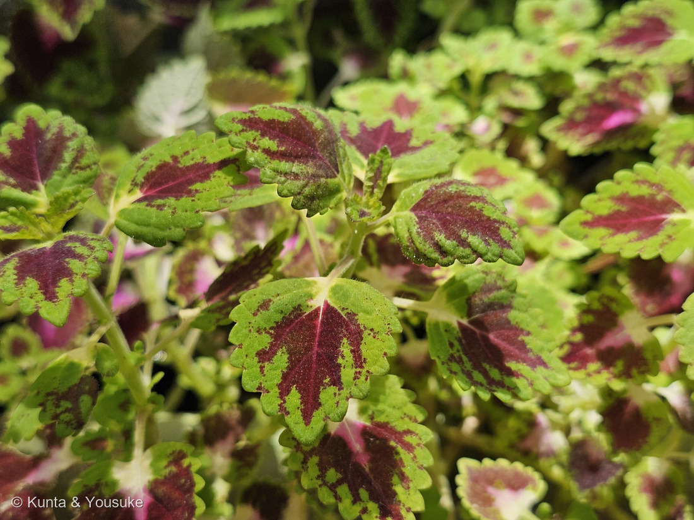
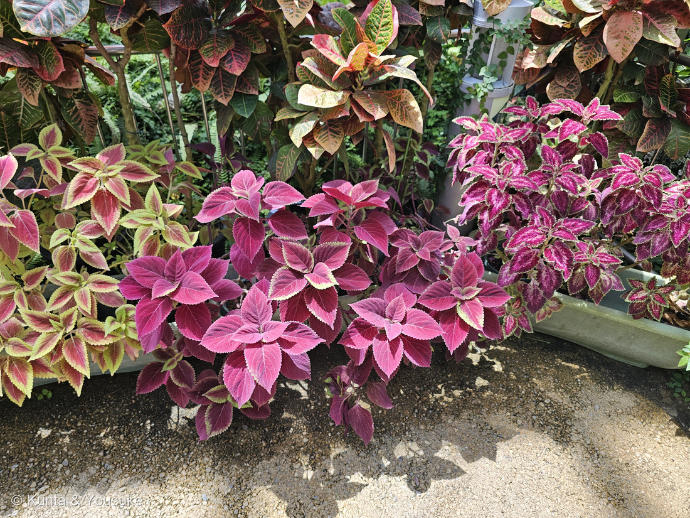
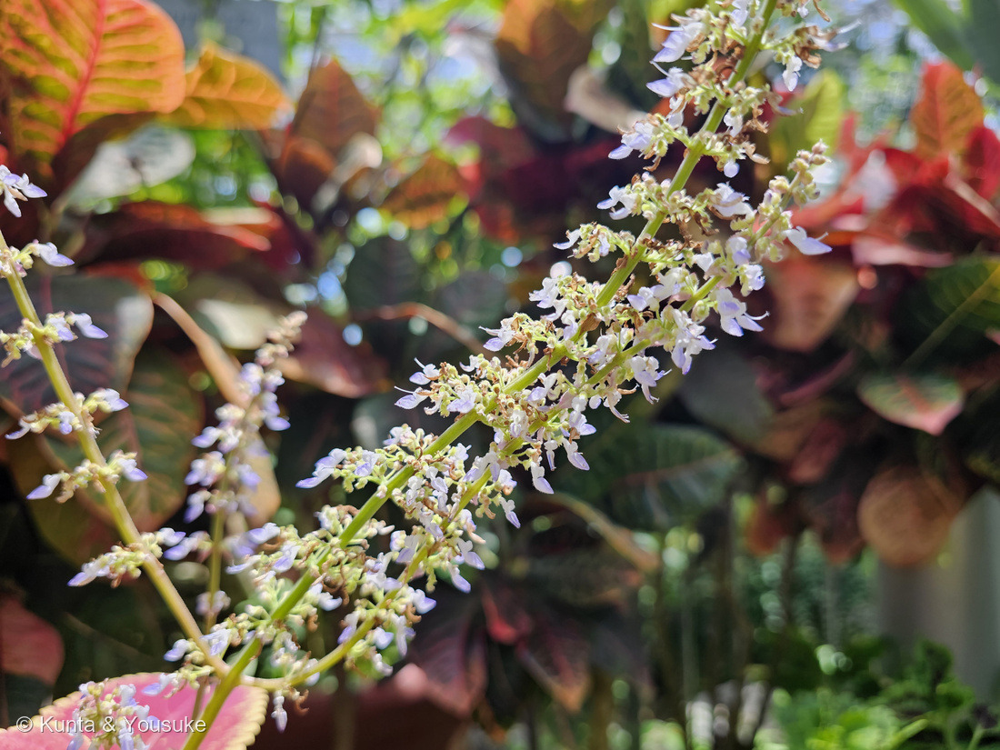
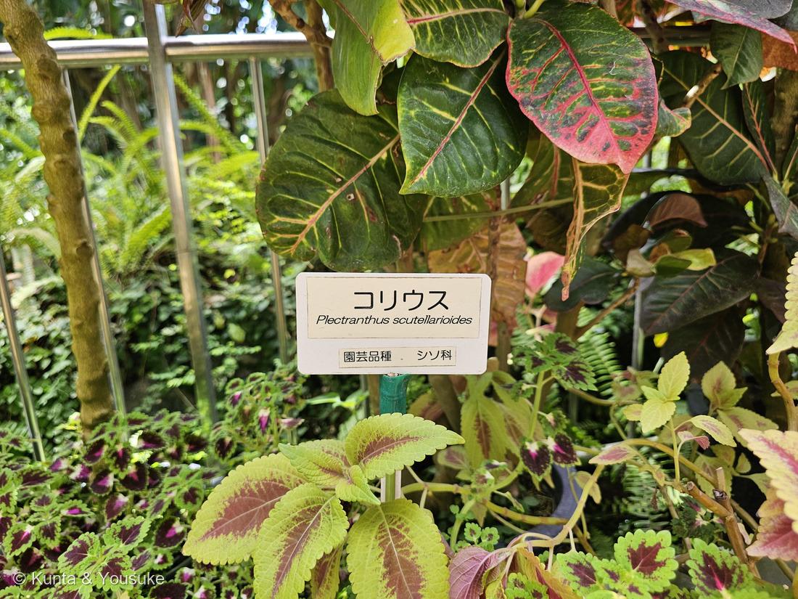
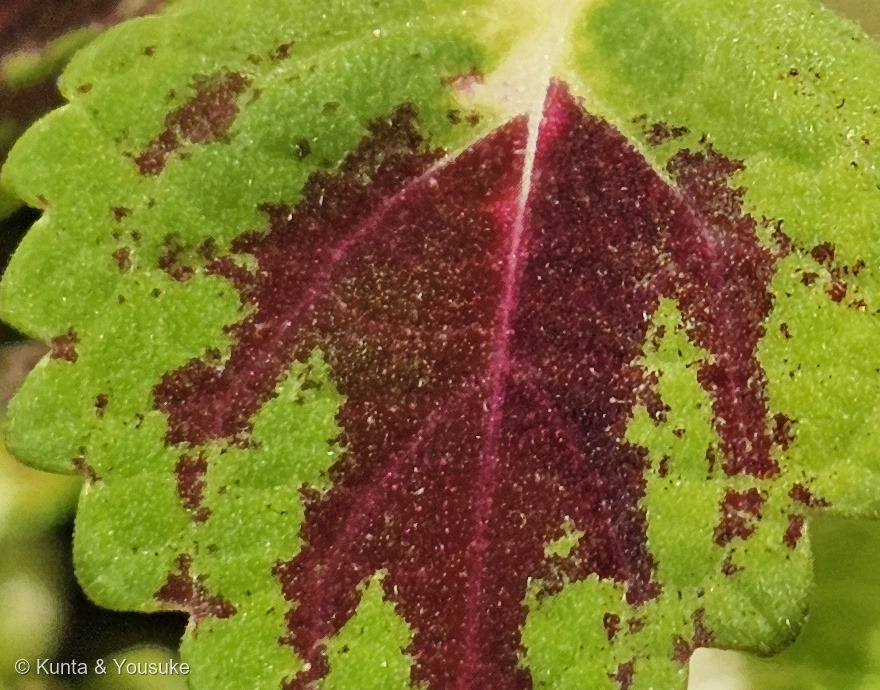
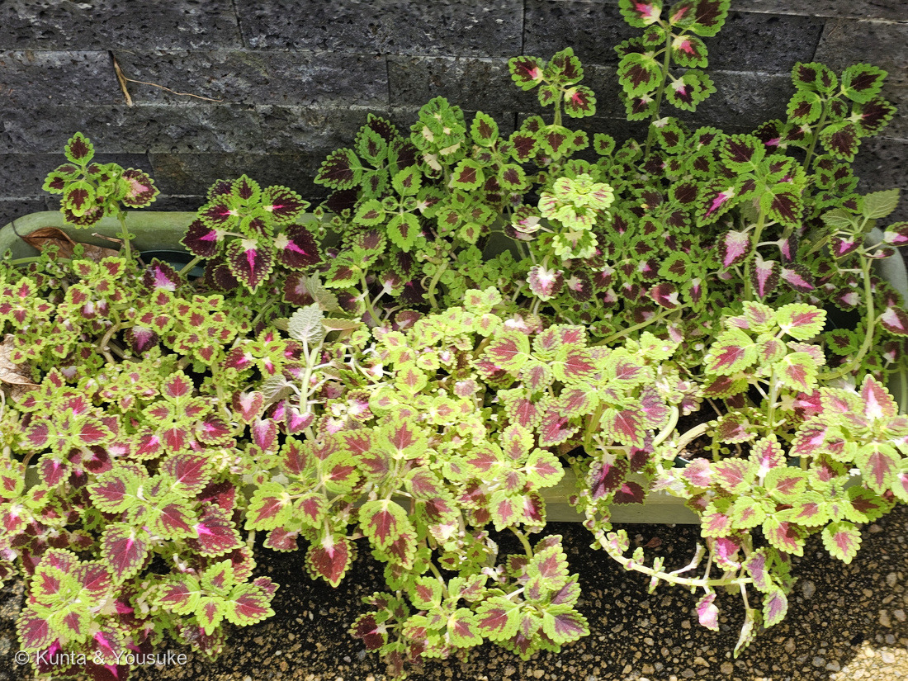
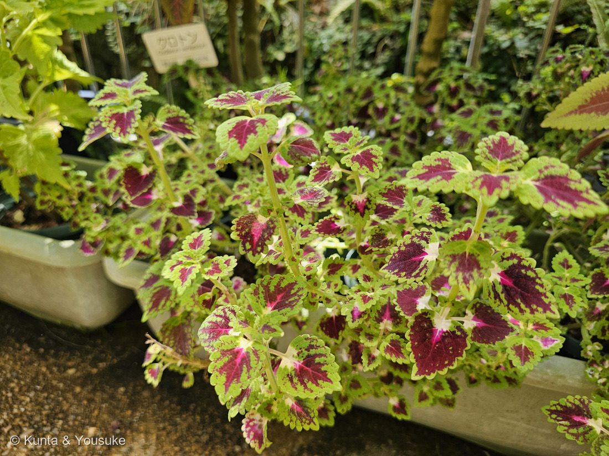
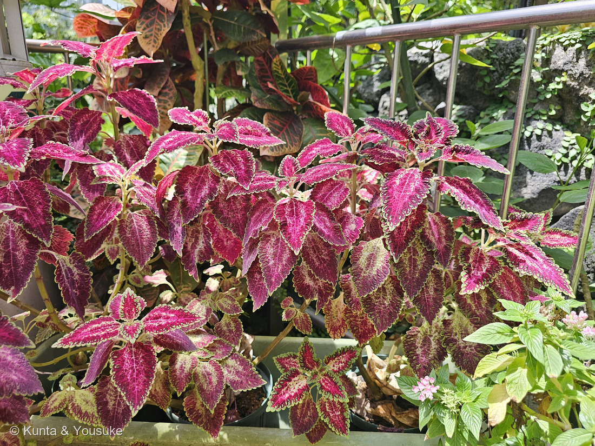
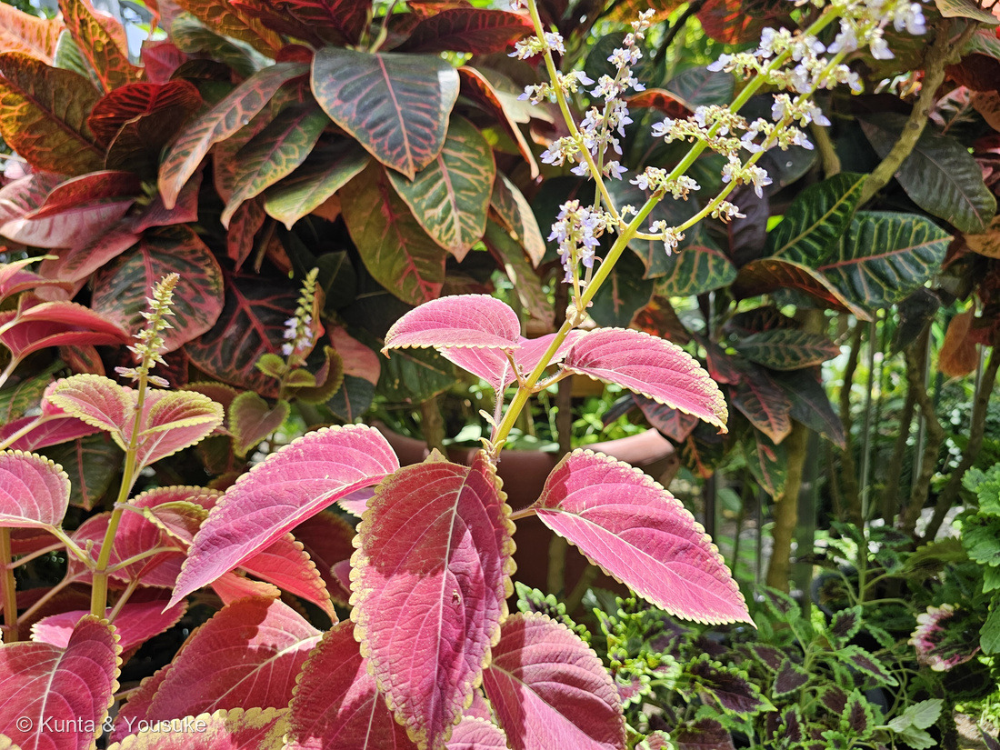

地図を読み込んでいるよ…
🔍 写真も地図も、押しているあいだ拡大して見られるよ（スマホは指を置いてすこし待ってね）。
🌍 の地図＝この子がもともと自生している場所を緑に。日本（南西諸島）、中国、台湾、インド、ミャンマー、カンボジア、ラオス、タイ、ベトナム、マレーシア、フィリピン、インドネシア、ニューギニア、太平洋諸島、オーストラリア（三河の植物観察）。くわしくは下の地図の説明を見てね。
⭐熱帯アジアから、オーストラリアと太平洋の島々まで広がっている草だよ。三河の植物観察は分布を「日本(南西諸島)、中国、台湾、インド、ミャンマー、カンボジア、ラオス、タイ、ベトナム、マレーシア、フィリピン、インドネシア(ボルネオ、ジャワ、小スンダ列島、スマトラ、マルク、スラウェシ)、ニューギニア、太平洋諸島(ビスマルク諸島、ソロモン諸島、バヌアツ)、オーストラリア」とする。⭐⭐⭐いちばん大事なのは、日本にも自生していること＝⭐沖縄県だけ緑にしてあるのは、そのため――園芸の鉢で見かける子だけれど、種としては南西諸島の野にいるんだ。⚠中国は南のほう（広東・広西・海南・雲南）だけ塗ってある＝三河は「中国」としか書いていないので、熱帯・亜熱帯に合わせて南に寄せたよ。⚠⚠だから、この4省は「だいたいこのあたり」より弱い、ぼくの見当だと思ってね。⚠本州は緑じゃない＝ぼくらが会ったのは広島市植物公園の中の鉢だよ。⭐同じシソ科では270 ウツボグサが日本の在来種、071 ハマゴウが海べの在来種＝⭐⭐この子だけ、熱帯からきた「葉を見るための」シソ科だね。
⚠ 地図は国（日本と中国だけ県・省）までしか塗れないから、ほんとうの分布より広く見えていることがあるよ。地図はだいたいの場所。正確なところは、上の文を見てね。
コリウス（金襴紫蘇）
Coleus scutellarioides (L.) Benth.
別名 キンランジソ（金襴紫蘇）／ニシキジソ（錦紫蘇）／サヤバナ（鞘花） 英名 painted nettle ⚠園の名札は Plectranthus scutellarioides（下を見てね）
シソ科 · Lamiaceae（コリウス属 Coleus・シソ目 Lamiales）── ⭐11人目のシソ科／⚠科は103のまま／⭐⭐きのうの270 ウツボグサと2日つづきのシソ科。でも、ちょうど正反対だよ
燻太さんの言葉「葉の表側に赤い模様が入る園芸品種みたい。」「斑入りの品種や、全草が真っ赤の品種もあるらしくって、見ていて飽きないシソ科の1つだね。」「匂いは…無いのかな？」── ⭐⭐⭐「表側」がすごく大事だった。そして匂いは、あるんだ ── しまってあるだけ
⭐⭐⭐ 名前と学名の由来 ── 「錦の紫蘇」と、鞘の花
- ⭐和名は「キンランジソ（金襴紫蘇）」「ニシキジソ（錦紫蘇）」（みんなの趣味の園芸）。葉に赤・黄・緑の鮮やかな模様がつくことから。⭐⭐「金襴」も「錦」も、金糸や色糸で織った豪華な織物のこと＝この葉を、織物に見立てた名前なんだね。
- ⭐⭐⭐属名 Coleus は、ギリシャ語の koleos（鞘）から＝雄しべの形に由来するとされるよ。⭐別名の「サヤバナ（鞘花）」（三河の植物観察）も、ここから。
- ⭐⭐写真③を見て。——下くちびるが舟の形にくぼんで、その中に雄しべと雌しべが収まっている。⭐まさに「鞘」。⭐⭐燻太さんが撮ってくれた花に、名前の由来がそのまま写っていたんだ。
⚠⭐⭐ 名札の学名は「前の住所」── そして、帰ってきた
- 園の名札（写真④）は Plectranthus scutellarioides。⭐でも、いまの学名は Coleus scutellarioides だよ。
- ⭐⭐この子の学名は、あちこち引っ越している＝Coleus（もともと）→ Solenostemon → Plectranthus → ⭐そしてまた Coleus に帰ってきた。
- ⭐⭐⭐帰ってきたのは2019年＝ペイトンらの論文「Nomenclatural changes in Coleus and Plectranthus (Lamiaceae): a tale of more than two genera」PhytoKeys 129: 1–158 (2019)＝212の名前が、Plectranthus などから Coleus に戻された。
- ⭐⭐⭐⭐そして、その論文が出たのは2019年8月23日――きょう（2026年8月23日）は、ちょうど7年後の、同じ日だよ。
- ⚠名札は責めないでね＝論文より前からある名札なら、書かれたときは正しかった（253の型）。⭐むしろ「学名が動いた」ことを教えてくれる名札だと思う。
⭐⭐⭐⭐⭐ 燻太さんの「匂いは…無いのかな？」── あるんだ。でも、しまってある
⭐⭐⭐ あるよ。三河の植物観察は、この子を「芳香がある」と書いている。
- ⭐⭐しかも、入れ物の場所まで書いてある＝「（葉は）微軟毛があり、下面にまばらに赤褐色の腺があり」（三河の植物観察）＝⭐香りの腺は、葉の裏にあるんだ。
- ⭐⭐⭐でも、そばに立っているだけでは香らない。——シソ科の香りは「腺鱗（せんりん）」という小さな袋にしまってあって、こすったり傷ついたりして袋がこわれて、はじめて出てくるから。
- ⭐その袋は、うちの図鑑で顕微鏡でのぞいたことがあるよ＝175 シソと146 ミント（「腺鱗 ── 香りの袋」）。葉の表面から半球のドームが盛り上がって、中に精油をためている、あれ。
⭐⭐⭐ そして、ここが面白いところ。——燻太さんは「葉の表側に赤い模様」と言った。三河は「腺は葉の下面（裏）」と書いている。＝⭐⭐赤い模様は表、香りの袋は裏。上と下で、役割が分かれているんだ。
⏳ 宿題＝次に会ったら、葉を1枚そっとなでて、指のにおいをかいでみよう。⚠園の株はちぎらないで、さわるだけね。
⭐⭐⭐⭐ 燻太さんの「葉の表側に赤い模様」── その「表側」が効いている

⑤ 赤と緑の境目 🔍 押しているあいだ拡大して見られるよ。
⭐ まっすぐな線じゃなくて、こまかい粒々になっているでしょう。細胞のひとつひとつが「作る／作らない」を決めているみたいに見えるんだ。
- 赤の正体はアントシアニン（🎨「色でつながる」の小道の仲間）。研究では「葉の上面の表皮にたまる」とされている。
- ⭐強い光にあたると、アントシアニンが増えてクロロフィルが減る（グエンとチンの研究・Scientia Horticulturae 2009）。
⭐⭐⭐ では、その赤は何をしているのか。——ローガンらの研究（Photosynthesis Research 124: 267–274, 2015）が、赤い葉の品種と緑の葉の品種をならべて、強い光を当ててくらべたよ。
- 強い白い光を当てたら、赤も緑も、同じくらいのダメージ（光合成のはたらきの低下）だった。
- ⚠でも、緑の品種のほうが「熱に逃がすしくみ」をずっとたくさん働かせていた。
- ⭐⭐⭐決め手はここ＝アントシアニンがほとんど吸わない「赤い光」を当てたときは、その差が消えた。
- → ⭐⭐「上面のアントシアニンは、光を吸いすぎることによるストレスを小さくしている」／「緑の品種は、アントシアニンが少ないぶんを、熱に逃がすしくみで埋め合わせていた」
⭐⭐ つまり、赤い葉は日よけ（サングラス）をかけている。⭐緑の葉は日よけがないぶん、内側でがんばって、つり合いを取っている。
⭐⭐⭐ だから「表側」なんだ。——日よけは、光の当たる側にないと意味がないからね。⭐写真⑤の粒々の境目は、007 シロツメクサの葉の赤い模様と、同じ話だよ。
⭐⭐⭐ 燻太さんの「見ていて飽きない」── 品種のちがい



⭐ この節の写真だよ。ボタンで切り替えてね。⑥⑦⑧はぜんぶ、同じ日の同じ場所。⚠それでも、ずいぶんちがって見えるでしょう。
- 三河の植物観察は、葉の色を「黄色、暗赤色、紫色、又は緑色」と書いている。
- ⭐⭐この色ちがいは、アントシアニン（赤〜紫）とクロロフィル（緑）が、葉のどこにどれだけあるかのちがい＝⭐同じ2つの色素の、置きかたを変えているだけなんだ。
- ⭐形も人が作る＝「摘心を繰り返して仕立てるスタンダード仕立てやツリー仕立てなどにすることができます」（みんなの趣味の園芸）。
⭐⭐ 花 ── ふつうは、咲かせない

⑨ 花穂の立つ株 🔍 押しているあいだ拡大して見られるよ。
⭐ 葉のあいだから、細長い花穂がまっすぐ立ち上がる。⚠ でも、ふつうは咲かせずに摘んでしまうんだ（下を見てね）。
- ⭐⭐コリウスは、ふつう花を咲かせずに育てる＝「花を咲かせずに育てれば、初夏から秋まで長く楽しむことができます」（みんなの趣味の園芸）。⭐葉を見る植物だから、花穂は出たら摘んでしまうことが多いんだよ。
- ⭐⭐⭐だから、写真③⑨のように花が咲いているのは、ちょっと得した眺めなんだ。
- 花は淡い青紫〜白の唇形花（三河の植物観察「花冠は紫色〜青色、長さ0.8〜1.3㎝」）が、茎の先の細長い花穂に、輪になって段々につく。
- ⭐270 ウツボグサの花穂と、同じシソ科の作りだね（あちらは枯れた姿だったけれど）。
⭐ 11人目のシソ科 ── そして、270 とちょうど正反対
出典：三河の植物観察「キランジソ Coleus scutellarioides」（mikawanoyasou.org）／みんなの趣味の園芸「コリウス」（shuminoengei.jp）／A. Paton et al.「Nomenclatural changes in Coleus and Plectranthus (Lamiaceae): a tale of more than two genera」PhytoKeys 129: 1–158 (2019)（phytokeys.pensoft.net）／B. A. Logan et al.「Examining the photoprotection hypothesis for adaxial foliar anthocyanin accumulation by revisiting comparisons of green- and red-leafed varieties of coleus」Photosynthesis Research 124: 267–274 (2015)／D. T. Nguyen & V. M. Cin「The role of light on foliage colour development in coleus」Scientia Horticulturae (2009)／広島市植物公園（広島市）の園の名札（2026-08-08）